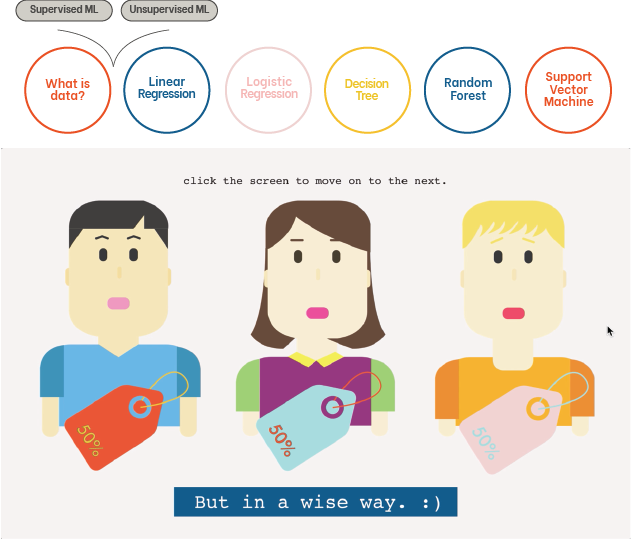
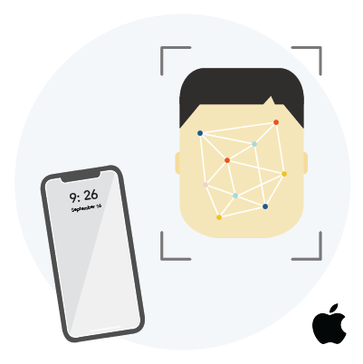

So Heum Hwang
about
playground
works
Joule, make keep play
Joule is a set of toy blocks to explore sustainability, especially energy cycle through play. Children can generate different types of energy such as wind or motion energy through physical interaction and connect them with battery blocks and output blocks with sound interaction.
TEAM
Anna Hing, Fabien Böttcher and me
MY ROLE
User Research, Interaction prototyping, Sound design, UI design, Filmmaking, Motion design, Storytelling
TOOLS
After Effects, Figma, Illustrator, Electronics

Final Video
Design Process: Discover
Our project started with the the broad topic of teaching kids about sustainability. We interviewed 2 parents who each had 19 year old child and 5 year old child. We could notice how younger parents are addressing more of a need to teach sustainability to their children, but were having a hard time explaining abstract concepts in their level. The increasing needs in teaching sustainability was not primarily about conveying micro-level habits like recycling or saving power. Parents had to give their children a bigger picture of the cycle and about how our planet's resources work.
Importance of Sustainability
“I haven't spare time to teach my children about sustainability in particular, rather I thought it was common sense.”
_father of 19 year old daughter
Abstract Concepts
“Talking about abstract concepts with my son is hard, because I don't know on which level to explain them.”
_mother of 5 year old son
We saw how different children workshops are done in Bildmuseet. There were workshops that dealt with questions like “What would you change if you can change something in the world?” and the children had to craft their solutions. Results varied from making robots that would clean the house to self-sorting trash cans. Workshops were throwing open-ended questions to children so that they can have an opportunity to think and explore by themselves, instead of having top-down questions that have a yes and no answer.

Design Process: Define
Sustainability should not be something that is taught from a top-down approach, but a concept that children can learn by themselves through creative freedom and exploration. After this exploration process, our solution should act as a conversation starter for parents that they can naturally use to explain important concepts through play.


Design Process: Develop
Early on in the process, rudimentary foam mockups and magnets helped to visualize the different types of modules and to test different interactions. With a sound sketch video, differernt sound effects were tested out to evaluate whether it was appropriate for each interaction.
Stage 1

I started off with 8 main chapters along with real life examples for each chapter (each ML algorithm).
Stage 2
8 out of 10 people could not understand the 2 chapters and the connection between the 2 and the rest.
Stage 3

In addition to the main narration, users wanted a more detailed information about machine learning.
5 times increase in understanding in ML compared to initial understanding
Users rated interaction as the 2nd most helpful factor in understanding ML
All users responded that real-life examples helped their understanding in ML

Design Process: Deliver
What is Data?

How does our personal info get collected as data?
Linear Regression
How does ticket companies predict airplane ticket prices?
Logistic Regression
How does e-commerce companies predict who to give discounts?
Decision Tree

How does music services predict customers who will pay for the fee?
Random Forest

How does music services predict customers who will pay for the fee?
Support Vector Machine
How does iPhone X use facial recognition to unlock?
Key Features
Interactive Contents
Respond to questions with your own answers, click on different components and see how they change and move during the process
Visualization with Graphs
After going through real life examples, see how each algorithm is visualized with graphs and see how data is mapped on the graph
Detailed Information
Aside from main explanation texts, learn the specific details in machine learning to know more about the concept
Exhibition